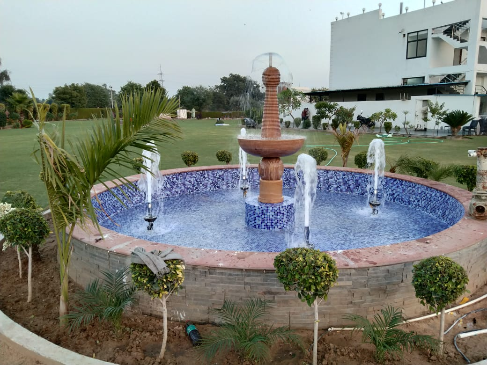

Garden
Stone & tiered fountains
Timeless tiered forms and stone finishes for gardens, courtyards and entry forecourts.
Kota · Rajasthan · India
Chambal Fountain designs and makes garden fountains, stone fountains and bespoke water features for homes, villas, hotels and landscapes in Kota and across India. Start with an idea, see it in 3D, then get a quote built around your space.
✦ Made to order · Project-based quotes in ₹ · 25 years of fountain experience
01 / What we make
From a quiet courtyard corner to a hotel lobby or a garden that needs a focal point, the right fountain changes how a place feels. Every piece is made to suit the setting rather than picked from a fixed catalogue.
Timeless tiered forms and stone finishes for gardens, courtyards and entry forecourts.

Clean lines, reflecting pools and calm water for villas, hotels and contemporary homes.

The sound of moving water in a courtyard, balcony or compact indoor corner.
02 / How it works
A clear, simple process — whether your project is in Kota, elsewhere in Rajasthan or another city in India.
Send dimensions, a photograph and the feeling you want. A reference picture is enough to start.
Choose a form, stone colour, finish and water tint. Use the 3D studio to rotate and explore it.
We review the design and share a project-based quotation in rupees with the options explained.
Once approved, the piece is made to order and packing, delivery and installation are arranged per project.

03 / Why Chambal Fountain
A fountain is a long-term addition to a space. We focus on proportion, material and the way water moves — not just the shape on the outside.
04 / Good to know
Common questions from customers looking for a fountain manufacturer in Kota and Rajasthan.
Ask us something else →Chambal Fountain takes custom fountain design and manufacturing enquiries from Kota and the wider Rajasthan region, and works on projects across India. Share your requirements on WhatsApp and the team will discuss what can be made for your space.
Prices depend on size, design complexity, material and finish, pump and lighting choices, and installation conditions. We prepare project-based quotations in rupees after understanding the requirements, rather than listing a fixed online price. Send your space details for a quote.
Yes. Our Custom Studio lets you choose a design, stone colour, finish, water tint and scale, rotate and move the 3D preview, and send the complete design brief to our team on WhatsApp.
Garden fountains, tiered stone fountains, wall fountains, modern reflecting pools, indoor water features and fully bespoke designs based on your own idea or reference photograph.
Yes. Along with Kota and Rajasthan, we take project enquiries from other cities across India. Delivery, packing and installation arrangements are discussed per project before the quote is finalised.
Use the Custom Studio to build a 3D design and send the brief on WhatsApp, or message +91 98290 29406 with your space size, preferred style and a photograph of the site. You review and send the message yourself inside WhatsApp.
Keep exploring

Scale, placement, sound and material — a practical guide to picking a fountain that fits your space.
Read the guide →A season-by-season care routine for the basin, pump and stone finish.
Read the guide →
The factors behind a fountain quote and how to plan a realistic budget.
Read the guide →Kota · Rajasthan · India
Tell us about your space. We'll help you find a fountain that belongs in it.